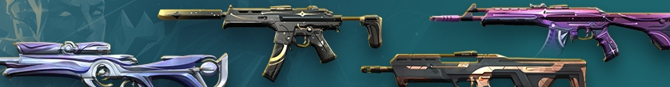
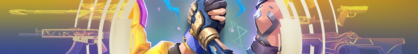

NOVIDADES DO EPISÓDIO
5, ATO III DO VALORANT
O Episódio 5, Ato III traz um novo Agente para o grupo: Harbor. Equilibre as coisas na sua equipe com esse Controlador e assista a seus inimigos tentando entrar no ponto. Apesar de toda a empolgação que acompanha a chegada de um novo Agente, não se esqueça de conferir o mais novo Passe de Batalha, o retorno da linha de skins Íon e mais.
Quem vem lá? Vindo do litoral indiano, Harbor é o novo Agente Controlador que comanda uma mistura de marés e correntes para proteger seus colegas de equipe e esmagar a equipe oponente. Atordoar seus inimigos com um gêiser (literalmente) e bloqueie a visibilidade e os trajetos com as habilidades Enseada e Cascata. Água nos olhos dos outros é refrescante!
NOVA LINHA DE SKINS:
O RETORNO DA ION (18 DE OUTUBRO)
A era de Íon chegou novamente, mas não pense que é apenas uma cópia idêntica! Eleve o som e o visual da sua coleção com Vandal, Ares, Spectre, Frenzy e uma Confronto Karambit projetadas no estilo Íon. Ou, se um visual não for suficiente, aprimore para uma das 3 variantes, cada uma com um Finalizador com cores correspondentes.
PASSE DE BATALHA DO EPISÓDIO
5, ATO III (18 DE OUTUBRO)

Um novo Ato significa um novo Passe de Batalha, e esse daqui está imperdível. Aumente sua coleção com o Spray Instruções Simples, o Chaveiro Inquebrável e a Ghost Odisseia nas Estrelas.
Também temos nesse Passe de Batalha o Chaveiro de Arma Luz de Corbin como item gratuito, criado em homenagem ao Corbin, um membro da comunidade do VALORANT. Ele teve como base as anotações de design do Corbin e de seu irmão mais velho, incluindo as coordenadas para uma estrela nomeada em homenagem ao Corbin pela Fundação Make-a-Wish. A Riot Games fará uma doação através do Fundo de Impacto Social da Riot Games para a Fundação C-Squad, criada pela família do Corbin logo antes de seu falecimento para homenageá-lo. Brilhe para sempre, Corbin!
Jogue e obtenha brindes extras ao comprar o Passe de Batalha do Ato III, incluindo a Odin Pedra Rúnica, o Spray Breach Aprova e a Confronto Espinho Iridescente.
PACOTE RETRIBUIÇÃO // 2022

O Pacote Retribuição está de volta! De 16 a 30 de novembro, 50% dos lucros obtidos com skins de armas e 100% dos lucros obtidos com acessórios do Pacote Retribuição // 2022 serão destinados ao Fundo de Impacto Social da Riot Games em parceria com a ImpactAssets.
Mas, antes disso, precisamos do seu voto! Em 21 de outubro, acesse nossos Stories no Instagram e nosso TikTok e vote em quais skins passados você gostaria de ver no Pacote Retribuição deste ano. Caso perca a votação no dia 21 de outubro, não se preocupe! Ainda será possível votar de 21 a 23 de outubro em nossa página do Twitter.
RANQUEADAS REINICIADAS
(18 DE OUTUBRO)
Ranqueadas redefinidas. Tudo pronto para enfrentar o desafio novamente? Prove seu valor em novas competições antes que o Ato e o Episódio cheguem ao fim.